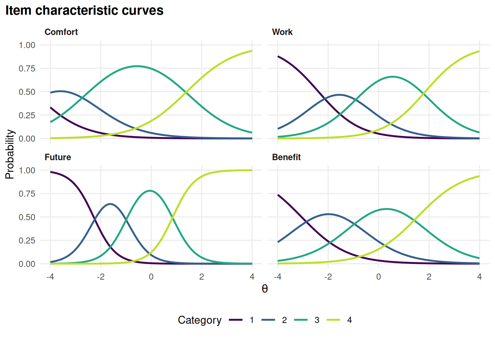
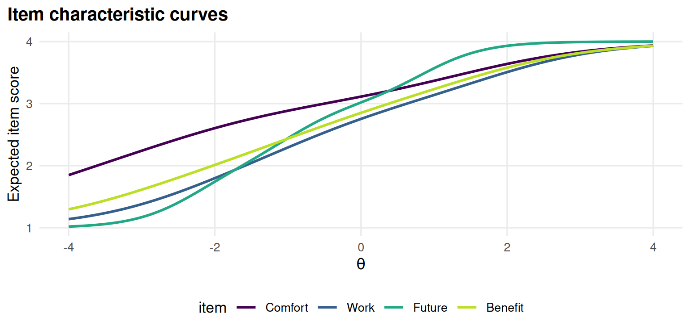
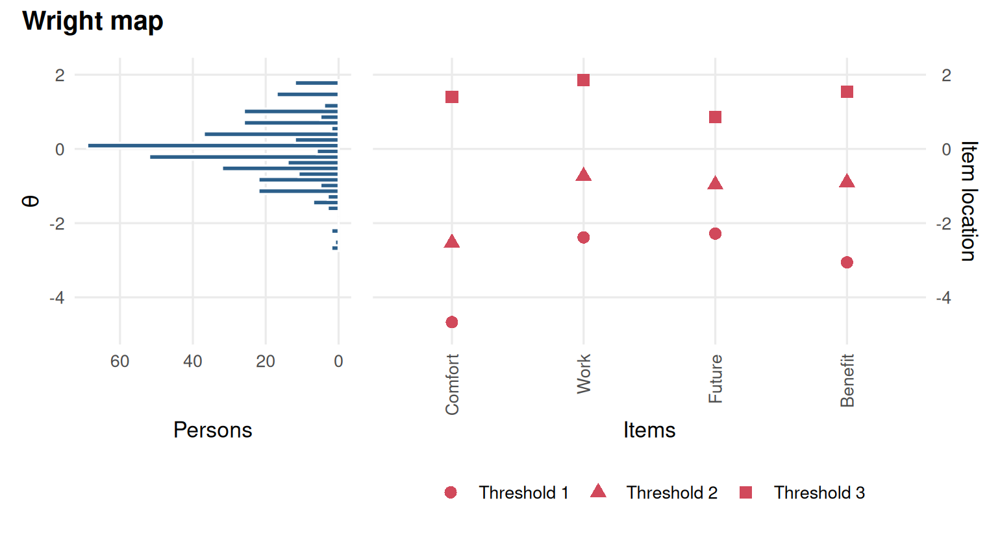
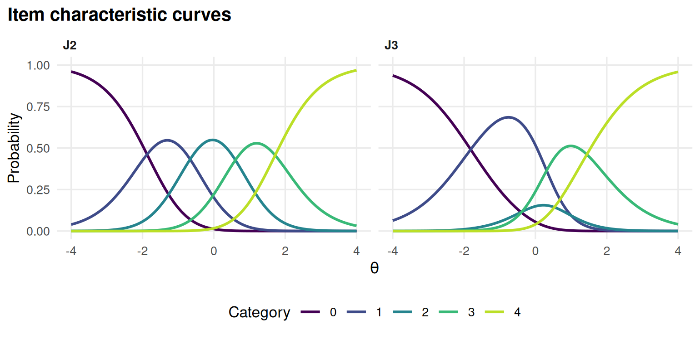

Chapter 8 Polytomous items and open-ended responses
Learning goals. After this chapter you can
- fit the partial credit, generalized partial credit and graded response models, and say how they differ;
- read category response curves and thresholds;
- recognise disordered thresholds and decide whether to collapse categories;
- describe how rater-scored open-ended responses fit into an IRT analysis.
Key terms: polytomous item, graded response model, GPCM, category response curve, threshold, expected score, QWK.
8.1 The ideas
Many items have more than two score categories: rating scales (strongly disagree to strongly agree), partial-credit mathematics problems, essays scored 0 to 4 against a rubric. Three families of models are used most.
- The graded response model (GRM, Samejima (1969)) models the cumulative probability of scoring in category \(k\) or higher with a 2PL curve, \(P(X \ge k \mid \theta) = \text{logistic}[a(\theta - b_k)]\). The thresholds \(b_1 < b_2 < \dots\) are ordered by construction: \(b_k\) is where a person has a 50% chance of scoring \(k\) or more.
- The partial credit model (PCM, Masters (1982)) is the polytomous Rasch model. It models each step from category \(k-1\) to \(k\) as a Rasch item, with a step difficulty \(b_k\). All items share the same slope.
- The generalized partial credit model (GPCM, Muraki (1992)) adds an item slope to the PCM.
In the PCM and GPCM the step difficulties are the points where adjacent category curves cross. They do not have to be in order. Disordered steps (for example \(b_2 < b_1\)) mean that a middle category is never the most likely response at any ability: respondents skip over it. That is often a sign of a category label that is unclear or a rubric level that raters cannot distinguish, and a common remedy is to merge the category with a neighbour.
Each item’s expected score curve, the average score as a function of \(\theta\), summarizes the categories in one line and is often the easiest plot to explain.
8.2 Example 1: attitudes to science
Science holds the responses of 392 people to four statements about science
and technology, each rated on a four-point scale (1 = strongly disagree to
4 = strongly agree).
select_model() compares the three models:
sel <- select_model(resp, verbose = FALSE)
sel
#> mirtverse model selection (ranked by BIC)
#>
#> model npar logLik AIC BIC SABIC RMSEA CFI delta weight
#> GRM 16 -1609 3250 3313 3263 0.148 0.910 0.00 0.795
#> PCM (Rasch) 13 -1619 3265 3316 3275 0.117 0.860 2.90 0.187
#> GPCM 16 -1613 3257 3321 3270 0.136 0.924 7.63 0.018
#>
#> The GRM model is recommended because it has the lowest BIC (3313.3). The
#> runner-up, PCM (Rasch), is 2.9 BIC points worse, which is positive evidence for
#> the GRM model. Absolute fit of the GRM model: RMSEA = 0.148 (poor fit), CFI =
#> 0.910, SRMSR = 0.073.The GRM has the lowest BIC, but the absolute fit (RMSEA) is not good for any of the three. With only four items, M2 has few degrees of freedom and RMSEA is unstable, so read it with care, and look at the items.
grm <- sel$models[["GRM"]]
tidy(grm)
#> # A tibble: 16 × 5
#> item itemtype term estimate std.error
#> <chr> <chr> <chr> <dbl> <dbl>
#> 1 Comfort graded a 1.04 NA
#> 2 Comfort graded b1 -4.67 NA
#> 3 Comfort graded b2 -2.53 NA
#> 4 Comfort graded b3 1.41 NA
#> 5 Work graded a 1.23 NA
#> 6 Work graded b1 -2.39 NA
#> 7 Work graded b2 -0.735 NA
#> 8 Work graded b3 1.85 NA
#> 9 Future graded a 2.29 NA
#> 10 Future graded b1 -2.28 NA
#> 11 Future graded b2 -0.965 NA
#> 12 Future graded b3 0.856 NA
#> 13 Benefit graded a 1.09 NA
#> 14 Benefit graded b1 -3.06 NA
#> 15 Benefit graded b2 -0.906 NA
#> 16 Benefit graded b3 1.54 NAEach item has one slope and three thresholds. Future has by far the steepest slope. The category curves show how the thresholds divide the scale:

Figure 8.1: Category response curves of the graded response model for the four Science items.
and the expected score curves summarize them:

Figure 8.2: Expected item score curves of the graded response model for the Science items.
The lowest category is rare for every item: its first threshold is far below average, so the curve for “strongly disagree” only rises for people far out in the left tail. The Wright map shows every threshold next to the distribution of people:

Figure 8.3: Wright map of the Science items: category thresholds next to the distribution of people.
8.3 Example 2: a rating category nobody uses
We simulate a six-item job satisfaction scale with five categories (0 to 4), answered by 1,500 employees. On item J3 the middle label was badly worded, so respondents tend to skip category 2.
# Simulated 6-item, 5-category scale; item J3 has disordered steps.
set.seed(808)
steps <- rbind(c(-2.0, -0.8, 0.4, 1.6),
c(-1.8, -0.6, 0.6, 1.8),
c(-1.6, 0.9, -0.3, 1.4), # J3: step 2 harder than step 3
c(-2.2, -1.0, 0.2, 1.4),
c(-1.9, -0.7, 0.5, 1.7),
c(-1.7, -0.5, 0.7, 1.9))
a <- c(1.3, 1.5, 1.4, 1.2, 1.6, 1.3)
d <- cbind(0, -a * t(apply(steps, 1, cumsum))) # GPCM intercepts
resp <- simdata(matrix(a), d, N = 1500, itemtype = "gpcm")
colnames(resp) <- paste0("J", 1:6)The category frequencies already hint at the problem:
round(t(apply(resp, 2, function(x) table(factor(x, levels = 0:4)) / length(x))), 2)
#> 0 1 2 3 4
#> J1 0.05 0.21 0.34 0.28 0.12
#> J2 0.07 0.23 0.37 0.24 0.08
#> J3 0.12 0.41 0.10 0.25 0.13
#> J4 0.05 0.18 0.32 0.30 0.14
#> J5 0.07 0.22 0.36 0.27 0.08
#> J6 0.09 0.24 0.37 0.22 0.08Fit the GPCM and look at the step parameters:
gpcm <- mirt(resp, 1, itemtype = "gpcm", verbose = FALSE)
coef(gpcm, IRTpars = TRUE, simplify = TRUE)$items
#> a b1 b2 b3 b4
#> J1 1.33 -2.14 -0.831 0.345 1.53
#> J2 1.51 -1.87 -0.665 0.603 1.72
#> J3 1.24 -1.81 1.008 -0.380 1.44
#> J4 1.18 -2.20 -0.963 0.163 1.39
#> J5 1.46 -1.92 -0.723 0.501 1.76
#> J6 1.21 -1.75 -0.625 0.768 1.87For J3 the second step (\(b_2\)) is larger than the third (\(b_3\)), unlike every other item. The category curves make it plain: category 2 of J3 is never the most likely response.

Figure 8.4: Category response curves of J2 and J3; category 2 of J3 is never the most likely response.
Disordered steps are not always a problem; they mean a category is rarely the most likely response, not that nobody uses it. Look at the wording or the rubric, and at how many people chose the category. Here we decide that the middle label is unclear and merge categories 1 and 2 of J3, so it is scored 0 to 3:
collapsed <- resp
collapsed[, "J3"] <- c(0, 1, 1, 2, 3)[resp[, "J3"] + 1]
gpcm_c <- mirt(collapsed, 1, itemtype = "gpcm", verbose = FALSE)
coef(gpcm_c, IRTpars = TRUE, simplify = TRUE)$items["J3", ]
#> a b1 b2 b3 b4
#> 1.613 -1.663 0.575 1.302 NAThe steps of the collapsed item are now in order. The GRM would never have shown the problem, because its thresholds are ordered by definition: this is one reason to fit a PCM or GPCM when you are developing a rating scale.
8.4 Open-ended responses and raters
Open-ended tasks, such as essays and constructed responses, are usually scored by trained raters against a rubric, and then analysed with a polytomous model like the ones above. Two extra questions come first. Do the raters agree? Agreement on ordinal scores is usually summarized by exact agreement and by quadratic weighted kappa (QWK), which gives partial credit for near misses (Cohen 1968). Are some raters harsher or less consistent than others? Rater effects can be studied by comparing each rater’s scores with those of the other raters on the same responses, or with models that include rater parameters.
mirtverse’s assessment pipeline has a scoring stage for this,
score_open(), which resolves two reads into a final score and checks
agreement (see section 9 of the assessment pipeline
article).
Lab 6 works through the whole process with eight raters and an automated
scoring engine.
8.5 Your turn
- Fit the PCM (
itemtype = "Rasch") toScience. Are any of its step difficulties disordered? - In Example 2, fit the GRM to the original data. What do the thresholds of J3 look like, and why do they not reveal the problem?
- Compare the test information of the original and the collapsed GPCM. How much information is lost by collapsing one category of one item?
- Two raters score 200 essays from 0 to 4 and agree exactly on 60% of them. Why is QWK a better summary than exact agreement for deciding whether the raters can be trusted?
Solutions
pcm <- mirt(Science, 1, itemtype = "Rasch", verbose = FALSE)
coef(pcm, IRTpars = TRUE, simplify = TRUE)$items
#> a b1 b2 b3
#> Comfort 1 -3.09 -2.595 1.39
#> Work 1 -1.90 -0.911 1.86
#> Future 1 -2.65 -1.421 1.14
#> Benefit 1 -2.45 -0.900 1.36
grm2 <- mirt(resp, 1, itemtype = "graded", verbose = FALSE)
coef(grm2, IRTpars = TRUE, simplify = TRUE)$items["J3", ]
#> a b1 b2 b3 b4
#> 1.9899 -1.6164 0.0767 0.4230 1.5352
theta <- matrix(seq(-3, 3, by = 1))
round(rbind(original = testinfo(gpcm, theta), collapsed = testinfo(gpcm_c, theta)), 2)
#> [,1] [,2] [,3] [,4] [,5] [,6] [,7]
#> original 1.95 4.19 5.80 6.99 6.16 3.64 1.43
#> collapsed 1.95 4.41 5.89 6.31 6.34 3.85 1.42- The GRM thresholds of J3 are in order, because the model forces them to be; the second and third are just close together.
- Hardly any. At some points the collapsed model even has a little more information, because the slope of J3 is estimated higher once the model no longer has to accommodate the skipped category. Collapsing a category that people skip costs almost nothing.
- Exact agreement treats a 3 versus 4 disagreement the same as a 0 versus 4 disagreement. QWK weights disagreements by their size and corrects for agreement by chance, so it reflects whether the raters rank the essays in the same way.